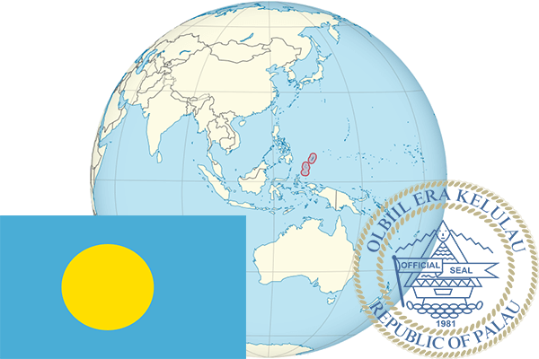

To`liq nomi: Palau Respublikasi
Region: Tinch okeani
Qonunchilik shakli: Respublika
Mustaqillik kuni: 1-oktabr 1994-yil (AQSHdan)
Poytaxt: Ngerulmud
Maydoni: 458 км²
Chegaradosh davlatlari: Yo’q
Aholisi: 21,503 (2016-yil)
Aholi zichligi: 43 /км²
Aholining o`rtacha yoshi: 67,76 yil (2010-yil)
Rasmiy tili: Ingliz, Palau tili
Dini: Xristian
Pul birligi: AQSH dollari
Telefon prefiksi: +680
Internet domen: .pw
Xalqaro tashkilotlarga a`zoligi: BMT
Dengiz va okeanlarga chiqishi: Tinch okeani
YIM: Butun: $315 mil.(2017-yil) Jon boshiga : $17,286
Yirik shaharlari: Korror, Ngerulmud